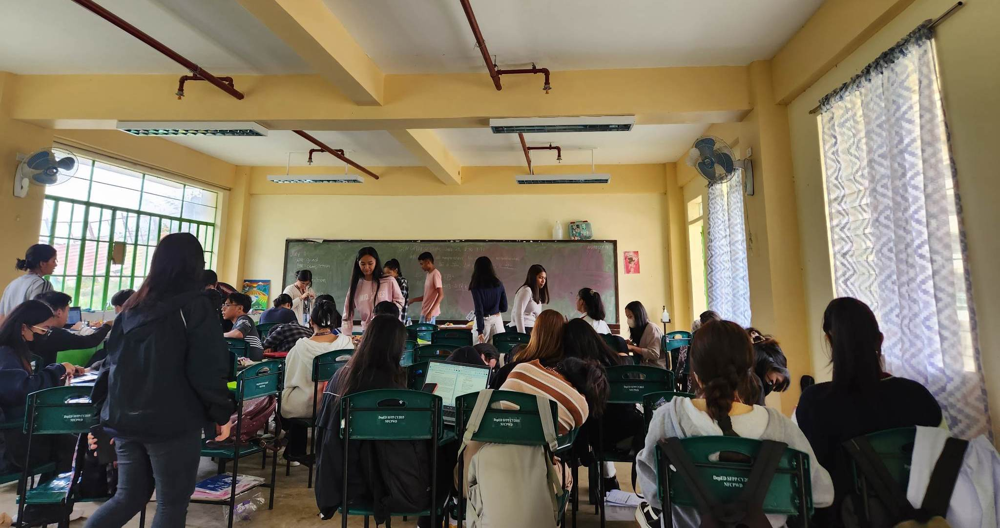
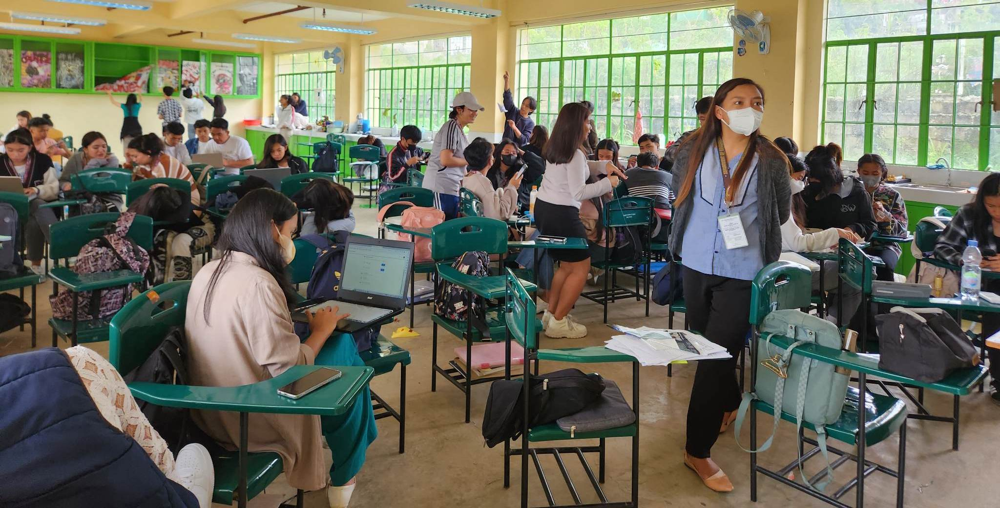

At Baguio City National Science High School (BCNSHS), we are committed to providing a comprehensive and well-rounded education that empowers our students for success. Our curriculum goes beyond the basics, encompassing a diverse range of subjects that cater to the varied interests and aspirations of our students. From core subjects like English, math, science, and social studies, to elective courses spanning the arts, humanities, and sciences, our curriculum is designed to foster intellectual curiosity, critical thinking, and a lifelong love for learning. With a dedicated team of experienced educators, we create a structured and engaging learning environment where students are encouraged to explore, question, and collaborate. By nurturing their academic potential and fostering a passion for knowledge, we ensure that every student at BCNSHS receives a quality education that prepares them for the challenges and opportunities of the future.

Baguio City National Science High School is established to house Junior High's STE program. The program is designed to develop the learners' full potential in Science, Technology, Math, and Engineering education and to prepare them for higher learning and future career in Science, Technology, and Engineering fields. The Science, Technology, and Engineering (STE) Program is the flagship program for developing Science, Mathematics, Engineering, and Research. The Science Curriculum Framework articulates standards, core competencies, approaches, and underlying principles in Science. This kind of framework will help students to understand basic Science concepts and processes in an integrative way to solve problems critically, think inventively, and make informed decisions to protect the environment, conserve resources and sustain the quality of life. Baguio City National Science High School commits itself to the development of the full potential of students in all areas. Various programs and projects have been implemented to realize its goal. One of its thrusts is to produce quality learners in the field of Science and Technology. In this regard, the STE program for Junior High School envisions highly responsible, morally upright, globally competitive, and work-ready learners. This program aims to widen access to quality secondary education with the vision to develop learners with the interest and aptitude for careers in or for higher learning in Science, Technology, and Engineering. Science, Technology, and Engineering (STE) is a Science, Technology, Engineering, Math, and Research-oriented curriculum.

We take pride in offering an extensive selection of specialized tracks to cater to the diverse interests and aspirations of our students. Our curriculum encompasses programs in Science, Technology, Engineering, and Mathematics (STEM), Accountancy, Business, and Management (ABM), Humanities and Social Sciences (HE), Information and Communication Technology (ICT), and Automotive Servicing. These tracks provide a comprehensive foundation in their respective fields, equipping our students with the necessary knowledge and skills to excel in their chosen disciplines. Whether you have a passion for scientific exploration, a flair for business and entrepreneurship, a love for the humanities, a knack for technology, or an interest in automotive technology, BCNHS offers the perfect avenue for you to pursue your academic and career goals. Our dedicated faculty, state-of-the-art facilities, and hands-on learning experiences ensure that you receive a well-rounded education that prepares you for a successful future. Join us at BCNHS Senior High School and embark on an enriching journey of discovery and personal growth.
At BCNSHS, we understand that your academic journey is not just about acquiring knowledge but also about personal growth and future success. That's why we have a dedicated team of highly trained and compassionate guidance counselors who are here to support you every step of the way. Our counselors provide personalized guidance tailored to your individual needs and aspirations. They will assist you in academic planning, helping you choose the right courses and set achievable goals that align with your interests and strengths. Additionally, our counselors are well-equipped to navigate the complexities of college admissions, scholarships, and post-graduation plans. They will provide you with valuable insights, resources, and assistance, ensuring that you have a competitive edge when pursuing your higher education dreams. Beyond academics, our counselors also focus on your personal development, helping you develop essential life skills, self-confidence, and resilience. They are here to listen, offer advice, and provide a safe space for you to express your concerns and aspirations. Whether you need guidance in selecting a career path, exploring your passions, or simply overcoming challenges along the way, our dedicated team of guidance counselors is committed to helping you thrive and achieve your full potential.
At BCNSHS, we believe that education extends beyond the classroom, and that's why we place great emphasis on providing a vibrant and enriching extracurricular program. We strongly encourage all our students to actively participate in our extensive range of extracurricular activities, as they play a crucial role in shaping well-rounded individuals and complementing the academic experience.
Our extracurricular offerings span a wide array of options, ensuring that there is something for everyone. Whether you have a passion for sports, a flair for the arts, a talent for public speaking, or a desire to serve your community, we have diverse opportunities to cater to your interests and talents. Our sports teams provide a platform for you to develop physical fitness, discipline, and teamwork. Through competitive matches and training, you can cultivate valuable skills such as resilience, determination, and sportsmanship.
For those with artistic inclinations, our clubs and performing arts groups offer a creative outlet and a chance to express yourself. Whether you're interested in music, dance, theater, or visual arts, our extracurricular activities provide a nurturing environment where you can hone your talents, unleash your creativity, and build lifelong friendships with like-minded individuals.
Moreover, we have a dedicated student government that offers opportunities for leadership and service. Being part of the student government allows you to actively contribute to the school community, voice your ideas, and initiate positive changes. It provides a platform for you to develop crucial leadership skills, learn effective communication and negotiation, and make a tangible impact on campus life.
Participating in extracurricular activities goes beyond just having fun. It helps you develop essential life skills that are invaluable in the real world. Through these experiences, you will enhance your teamwork abilities, learn to manage your time effectively, and cultivate a strong work ethic. Extracurricular activities also foster personal growth by boosting self-confidence, expanding your horizons, and exposing you to new experiences and perspectives.
At BCNSHS, we firmly believe that a well-rounded education encompasses both academic excellence and holistic development. By participating in our extensive range of extracurricular activities, you will not only enhance your academic journey but also develop into a well-rounded individual equipped with the skills and qualities needed to succeed in various aspects of life. So, we encourage you to seize these opportunities, embrace new challenges, and embark on a transformative journey of personal growth, leadership, and camaraderie through our vibrant extracurricular program.
We are deeply committed to equipping our students with the tools, resources, and guidance they need to navigate the exciting journey of college and career readiness. We understand that your high school years serve as a crucial stepping stone towards your future, and we are here to support you every step of the way.
Our comprehensive college and career readiness program is designed to help you explore a wide range of post-secondary education options and career pathways. We organize engaging and informative college fairs, where you can connect with representatives from various colleges, universities, and vocational institutions. These events provide invaluable opportunities to gather information, ask questions, and make informed decisions about your higher education choices.
Navigating the college application process can be daunting, but rest assured, our dedicated team is here to assist you. We provide personalized guidance and support, helping you navigate the intricacies of college applications, including preparing application materials, writing compelling personal statements, and ensuring that you meet deadlines. We understand the importance of financial considerations, and we offer comprehensive assistance with financial aid applications, scholarships, and grants to help alleviate any financial barriers that may hinder your pursuit of higher education.
Beyond college exploration, we recognize the significance of career exploration and preparation. We offer a range of career exploration opportunities, such as job shadowing and internships, where you can gain firsthand experience and insights into different industries and professions. These immersive experiences allow you to make informed decisions about your career path and provide a valuable foundation for future career success.
In addition, we provide resources and workshops to help you develop essential career readiness skills, such as resume writing, interview techniques, and networking strategies. Our goal is to empower you with the knowledge and confidence to make a smooth transition from high school to the workforce or further education.
At BCNSHS, we take pride in our extensive network of alumni and community partnerships. We leverage these connections to provide mentorship programs, guest speaker sessions, and industry collaborations, all aimed at exposing you to a diverse range of career opportunities and providing valuable insights from professionals in various fields.
Whether your aspirations lie in higher education, entrepreneurship, or the workforce, our college and career readiness resources are tailored to help you explore your passions, set ambitious goals, and develop the skills necessary for success in the 21st-century job market. We are dedicated to empowering you to make informed decisions about your future and supporting you as you embark on the next chapter of your educational and professional journey.
To ensure your health and safety, we provide comprehensive health services within our school premises. Our team of experienced school nurses and dedicated health professionals is readily available to address any health concerns or emergencies that may arise. Our health clinics are equipped with the necessary resources and facilities to provide prompt medical assistance when needed.
In addition to addressing immediate health needs, we also focus on preventive care. We conduct regular health screenings to detect any potential health issues early on, allowing for timely intervention and treatment. We also offer vaccinations to protect you from common infectious diseases, ensuring that you can focus on your studies without unnecessary health concerns.
We recognize that mental health is an essential aspect of your well-being. Our school is committed to providing support and resources for mental health concerns. We understand that the challenges of high school can sometimes be overwhelming, and we strive to create a safe and inclusive environment where you can seek assistance and guidance. Our trained counselors are available to provide confidential counseling and support, helping you navigate personal challenges, manage stress, and develop coping strategies.
Promoting healthy habits and an active lifestyle is integral to our commitment to your overall well-being. We believe that physical education and sports play a vital role in maintaining a healthy mind and body. Our school offers a comprehensive physical education curriculum and access to well-equipped sports facilities, allowing you to engage in regular physical activity and develop lifelong habits of fitness and well-being. Participation in sports teams and extracurricular physical activities not only promotes physical health but also fosters teamwork, discipline, and personal growth.
At BCNSHS, we understand that your well-being extends beyond the classroom. We are committed to creating a supportive environment that nurtures your physical, mental, and emotional health. Our holistic approach to education ensures that your overall well-being is prioritized, enabling you to thrive academically and personally. We are here to support you every step of the way, ensuring that you have the necessary resources and guidance to maintain a healthy and balanced lifestyle throughout your educational journey.
Our modern library boasts an extensive collection of books, covering a wide range of subjects and genres. Whether you're looking for classic literature, scientific research, historical accounts, or the latest bestsellers, our library is sure to have something that piques your interest. Our librarians are knowledgeable and passionate about connecting students with the right resources, and they are always ready to assist you in finding the perfect book to ignite your imagination or support your academic pursuits.
In addition to a vast selection of books, our library provides access to a wide range of research materials. We subscribe to various digital databases, academic journals, and online resources, giving you access to up-to-date and reliable information for your research projects and assignments. Our dedicated research stations equipped with computers, high-speed internet, and printing facilities ensure that you have everything you need at your fingertips to delve into the world of knowledge and exploration.
Keeping pace with the digital age, our library also offers an array of technology resources to support your academic endeavors. We understand the importance of information literacy and technological skills development in today's interconnected world. That's why our library is equipped with modern computers, equipped with software and applications that aid in research, multimedia creation, and data analysis. These resources enable you to develop critical digital skills and stay at the forefront of technological advancements.
Furthermore, our library provides a conducive and comfortable environment for study and collaboration. With designated study areas, group discussion spaces, and quiet corners for focused work, you can choose the setting that best suits your learning style. Our library also hosts workshops and training sessions on information literacy, research techniques, and digital tools, empowering you with the skills and knowledge necessary to navigate the vast sea of information with confidence.
At BCNSHS, we view our library or media center as much more than a repository of books and resources. It is a dynamic space that fosters a love for learning, encourages exploration, and nurtures intellectual curiosity. Whether you're seeking academic resources, conducting research, or simply immersing yourself in the joy of reading, our library is a welcoming sanctuary where you can expand your horizons, broaden your knowledge, and embark on a lifelong journey of discovery.
At BCNSHS, we firmly believe that fostering strong partnerships between our school, parents, and the community is vital for the success and well-being of our students. We recognize that education is a collective effort, and when we work together, we create a rich and supportive learning environment that propels our students towards excellence.
We highly value the involvement of parents in their child's education. We understand that parents play a crucial role in shaping their children's academic and personal development. That's why we actively encourage and welcome parents to actively participate in their child's educational journey. We organize regular parent-teacher conferences, where parents have the opportunity to meet with their child's teachers, discuss their progress, and gain valuable insights into their academic performance and overall well-being. These conferences provide a platform for open communication and collaboration, enabling parents and teachers to work together towards the best outcomes for our students.
In addition to parent-teacher conferences, we organize a variety of family engagement activities throughout the year. These events are designed to create opportunities for parents and families to be actively involved in their child's education. From family workshops and educational seminars to cultural festivals and performances, these activities foster a sense of belonging and create a strong school-home partnership. We believe that when parents and families are engaged in their child's education, students feel supported, motivated, and empowered to excel.
Our commitment to collaboration extends beyond the school and parents. We actively seek partnerships and collaborations with local organizations and community members to enhance the learning experiences of our students. We believe that by connecting our students with real-world experiences and resources, we can broaden their horizons and provide them with a well-rounded education.
Through these partnerships, we offer unique opportunities for our students to engage with professionals and experts in various fields. We organize guest speaker sessions, industry visits, and mentorship programs, allowing students to gain valuable insights and practical knowledge. These interactions expose our students to a wide range of career pathways, encourage critical thinking, and inspire them to pursue their passions with confidence.
Furthermore, our collaborations with local organizations allow us to offer community service initiatives and social responsibility projects. We believe in instilling a sense of empathy and compassion in our students, and by actively participating in community service, they learn the value of giving back and making a positive impact in the world around them.
At BCNSHS, we believe that by working collaboratively with parents and the community, we create a network of support and resources that enriches the educational experience of our students. We are committed to building strong partnerships that empower our students to reach their full potential. Together, we can create an environment where every student thrives academically, socially, and personally.